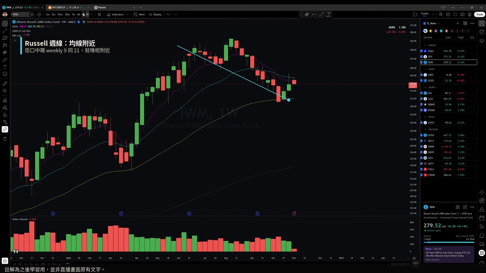

概要
Russell 而家喺週線 9 同 21 附近
11:31 至 11:39，佢話 Russell is now at the weekly 9.21。Whisper 嘅 word 時間把呢句定喺 11:31–11:37；同一長段稍後先講到半導體週線 50 EMA。YouTube 自動字幕把呢句誤作 “between 9:00 and 10:00”。本頁按 Whisper 讀成 weekly 9 同 21。
講呢句開始時，11:31 畫面係 IWM 1 小時；到 11:36 已經切到 IWM 週線，同「weekly」一致。本頁用週線做主圖，唔會把 1 小時圖上嘅線標死成週線 9 或者 21。圖例多數冇印周期，所以註解只標「佢口中嘅位置就喺呢附近」。
圖一 · 主圖
IWM 週線：口中嘅 9 同 21 就喺呢附近
直播 11:36

原話
Russell is now at the weekly 9 and 21.
Russell 而家喺週線 9 同 21。
點樣讀
週線見到價格回落到均線附近。佢只用一句定位，冇再講要喺呢度淡定、定係當做支持。
圖例冇印 9 或者 21，本頁唔會指定邊一條彩線就係邊個周期。讀圖重點係：口中嘅週線 9 同 21，就喺價格而家附近呢一帶。
附註
注意事項
- YouTube 自動字幕把 “weekly 9.21” 誤聽成 “between 9:00 and 10:00”。Whisper 連同 word 時間係 weekly 9.21，本頁讀成週線 9 同 21，並喺原話註明。
- 11:31 畫面係 IWM 1 小時，11:36 先切到週線。本頁用週線做主圖，避免把小時圖嘅線寫死成週線均線。
- 圖例多數只有顏色同數值，冇印均線周期。本頁唔會把某條彩線寫死成 9 或者 21。
- 呢句好短，冇講倉位或者買賣價。畫面睇唔到成交價、倉位大細或者損益，所以唔寫死呢啲數字。